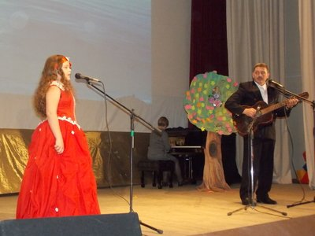
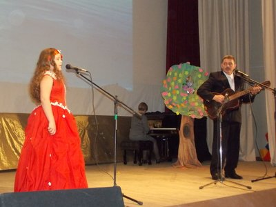
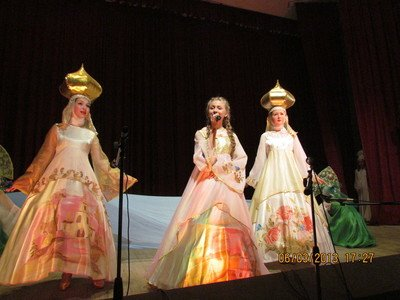
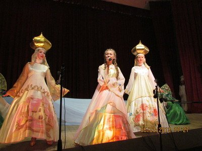
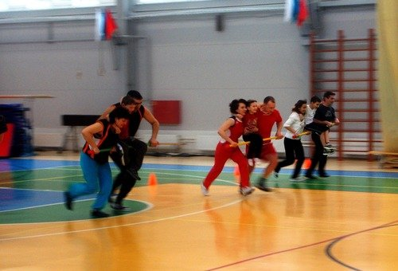
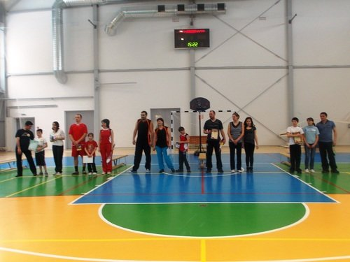
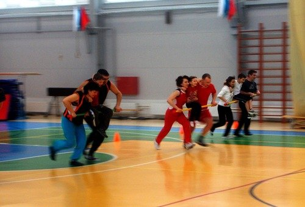
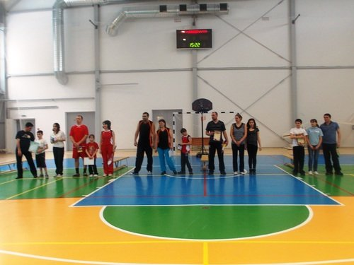

Подведены итоги районной акции «Мой папа – самый лучший 2013»
Сколько много пап на свете и все они такие разные: добрые и решительные, мужественные и весёлые, отзывчивые и
смелые, любящие и заботливые. И каждый из них – лучший для своей семьи.


 

Отдел по туризму спорту и социальному развитию администрации МР «Тарусский район» в содружестве со
специалистами отдела культуры, Детской юношеской спортивной школы, Тарусского дома детского творчества и
общеобразовательных учреждений района в пятый раз провел, уже ставшую традиционной, районную акцию «Мой папа
– самый лучший!». Стартовала она 28 января 2013г.
При поддержке своих детей, а в большинстве и всего семейства, 98 пап (!) участвовали и побеждали. В рамках
акции были предложены 6 различных номинаций и конкурсов для пап и детей в возрасте от 6 до 15 лет.
1 номинация - «Лучшая стенгазета о папе» - включала в себя конкурс стенгазет на тему «Знакомьтесь, это мой
папа!». 29 девчонок и мальчишек представили свои работы. Победителями стали:
- 1 место - Жиляева Анастасия и её папа Алексей Николаевич (г. Таруса).
- 2 место поделили две семьи: Парашина Вера, Смирнов Юрий и их папа Санкин Евгений Анатольевич(г. Таруса),
Михайлова Елена и её папа Сергей Николаевич ( с. Волковское).
- 3 место - Домбровский Олег, Дружининская Карина и их папа Домбровский Игорь Аркадьевич (г. Таруса).
2 номинация - «Отец-молодец!» - состояла из компьютерной презентации на тему «Папа – лучший семьянин!» и
вновь 27 участников - детей знакомили компетентное жюри с «лучшими папами». Жюри определило
победителей:
- 1 место - Сысоева Софья и папа Евгений Александрович (с. Лопатино)
- 2 место - Сиднева Диана и папа Роман Геннадьевич (г. Таруса)
- 3 место - Ермилова Анастасия и папа Геннадий Валентинович (г. Таруса).
Самым многочисленным по количеству участников был творческий конкурс-выставка «Подарки папиными руками».
В третьей номинации «Мой папа – мастер «Золотые руки», где участвовали 40 пап и их дети победителями
стали:
- 1место - Сысоев Евгений Александрович и Софья (с. Лопатино)
- 2 место - Лебедянцев Александр Николаевич и Екатерина (с. Лопатино)
- 3 место - Давлятшин Фаниль Шамильевич и Динар (с. Лопатино)
9 февраля 2013г. в СК «Лидер» в рамках 4 номинации «Мой папа спортсмен!» прошла зрелищная спортивная эстафета
«Мой папа и я – неразлучные друзья!»
Девять спортивных пар проявляя сноровку стремились к победе. Результаты иногда зависели от одной секунды.
Победителями стали:
- 1 место - Блатиковы Андрей Николаевич и Никита (с. Барятино)
- 2 место - Хромых Сергей Сергеевич и Максим (с. Лопатино)
- 3 место - Шпагины Николай Сергеевич и Полина (г. Таруса)
6 февраля в киноконцертном зале проводилась 5-ая номинация «Самый начитанный папа», которая включала в себя
интеллектуально- творческий турнир «Папа и я – читающая семья», заявка состояла из 8 пар участников. Эта
номинация была предложена впервые и очень понравилась нашим номинантам. И как верно сказал классик
А.Грибоедов «Не надобно другого образца, когда в глазах пример отца». А пары наши состояли не только из пап
и их детей, а из дедушек и внуков. Друзья, читайте больше, приучайте к этому ваших детей!
Победителями стали:
- 1 место - Михеенков Сергей Егорович и Маслов Данила (г. Таруса)
- 2 место - Коврижкин Дмитрий Сергеевич и Георгий (г. Таруса)
- 3 место - Сысоев Евгений Александрович и Софья ( с. Лопатино)
16 февраля в 12:00ч. в киноконцертном зале уже не было свободных мест, так как все были приглашены, и
участники и гости города, на праздничное мероприятие, посвящённое подведению итогов районной акции, где на
сцене шло и награждение, и шестая номинация «Мой папа – творческий человек» с выступлением участников
творческого конкурса «Две звезды». Участвовало 4 пары, из них победителями стали:
- 1 место - Венгерцев Сергей Ильич и Мария (г. Таруса)
- 2место - Яшкин Андрей Валентинович и Горбунова Мария (с. Некрасово)
- 3 место - Карпунин Виктор Иванович и Мария (с. Волковское)
В номинации «Супер – ПАПА» победил Сысоев Евгений Александрович из с.Лопатино, набравший наибольшее
количество призовых очков.
Заместитель главы администрации МР «Тарусский район» О.Э. Ленц поздравила всю семью и торжественно вручила
Евгению Александровичу Сысоеву диплом и главный приз - три билета на балет «Щелкунчик» в исполнении
Московского театра «Корона Русского балета» 23 февраля в г. Тарусе.
Впрочем подарки - дипломы и призы, а их было вручено 120шт., получили все без исключения участники акции «Мой
папа - самый лучший!». Но главной наградой для пап стал блеск и восторг детских глаз, искреннее выражение
любви ребёнка к главному мужчине на земле - ПАПЕ. Праздник показал, как важна семья, которая объединена
общими интересами, и во главе этих интересов стоит отец. Все участники доказали, что обладают высоким
творческим потенциалом и умеют сообща работать и побеждать. ПОЗДРАВЛЯЕМ ВСЕХ УЧАСТНИКОВ!
Лобода И.В. начальник отдела по туризму спорту и социальному развитию администрации МР «Тарусский
район»


 

 





{kind=link}
{kind=link}
{kind=link}
{kind=link}
{kind=link}
{kind=link}
{kind=link}
{kind=link}
{kind=link}
{kind=link}
{kind=link}
{kind=link}
{kind=link}
{kind=link}
{kind=link}
{kind=link}
{kind=link}
{kind=link}
{kind=link}
{kind=link}